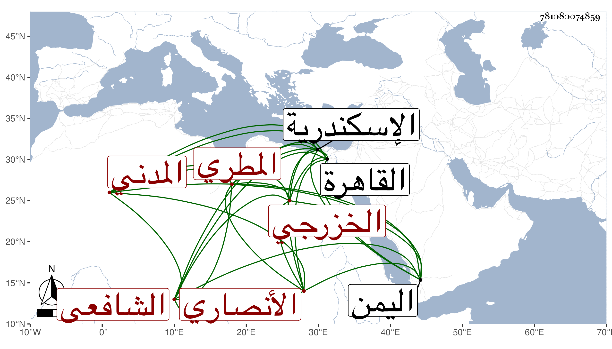

0902Sakhawi.DawLamic.ITO20230111-ara1.EIS1600.781080074859
Biography ID: 781080074859
أحمد بن عبد الرحمن بن محمد بن أحمد بن خلف بن عيسى بن عساس بن بدر بن علي بن يوسف بن عثمان كمال الدين أبو البركات بن التقي أبي الحزم بن الحافظ الجمال أبي عبد الله الأنصاري الخزرجي المطري الأصل المدني الشافعي ولد كما قرأته بخط أخيه أبي حامد نقلا عن خط أبيهما بعد غروب الشمس من يوم الخميس لثمان خلون من شعبان سنة ستين وسبعمائة ، وسمع من العز بن جماعة جزءا من حديثه تخريجه لنفسه وغيره ومن الأمين بن الشماع وحمزة بن علي الحسني السبكي ، ودخل القاهرة والاسكندرية وسمع بها من حسن بن علي العمري وأجاز له في سنة إحدى وستين فما بعدها أبو الحرم القلانسي وناصر الدين التونسي ومصطفى الدين العطار وأحمد بن محمد بن أبي بكر القسطلاني وآخرون ، وحدث سمع منه التقي بن فهد وروى عنه هو وأبو الفتح بن صالح ، وكان فقيها صوفيا عارفا بعلم الصوفية والحديث والعربية وأصول الدين غواص الفكر على الدقاق واستنباط الفوائد ويذاكر بأشياء مفيدة ، وينسب إلى معاناة الكيمياء ، وقد تزهد ودخل اليمن وأقام بها نحوا من عشرة أعوام وأقام في مدينة حلس عند القاضي ابن العراق حتى مات وكانت وفاته في أول ذي الحجة سنة اثنتين وعشرين ودفن هناك رحمه الله ، وهو في أنباء شيخنا باختصار .
